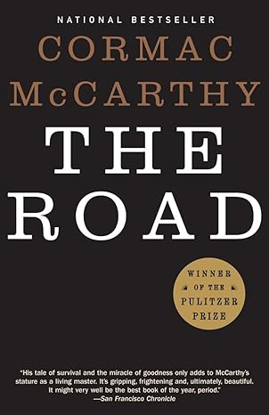

Favorite Book
"The Road" by Cormac Mccarthy
This book is wonderful to me because in the dark post-apocalyptic world the book presents, the dynamic of the characters truly portrays a message about the indominable human spirit and how love conquers all.
Favorite Song
"Ecos Perdidos" by Luz Futuro
This is one of my favorite songs of all time, as I love gothic music, and post-punk, and this song combines both elements into a song that is one of my best jams ever!
Favorite Movie
Drive 2011
This is my favorite movie of all time. I love Ryan Gosling as an actor, and the aesthetics of this movie and Gosling's stoicism make it a great watch.